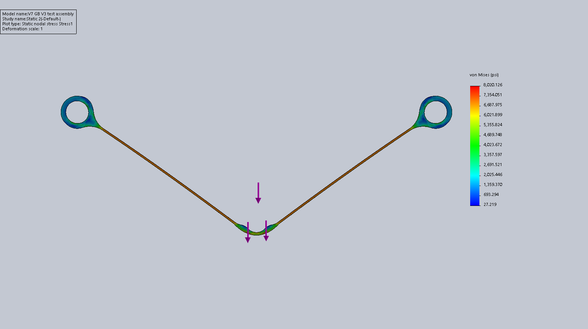
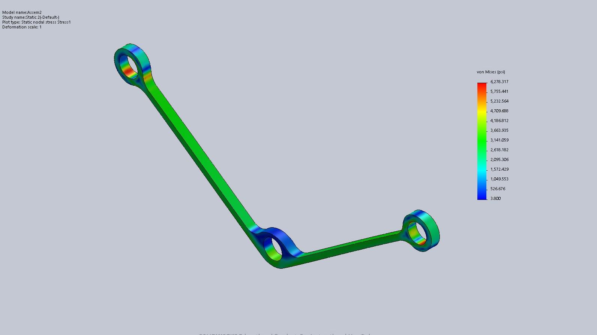

Bracket
Objective
For the first project in my Design 1 class we were each tasked with designing and laser-cutting the lightest acrylic bracket which could hold a 25-pound weight in the air for at least 10 seconds.
There would be two rounds of testing and your lightest bracket between the two rounds would be used to determine your grade.
Our bracket was only allowed to attach to the mounting plate in certain locations and was not allowed to pass through a forbidden area as indicated in the diagram. Additionally, if the weight deflected from the fixed starting position by ¼ of an inch then the bracket failed the test.
To add further constraints, we could test our brackets however many time we wished; however, for the two official tests our bracket would be manufactured by the Teaching Assistants so we had to adjust for variations between the various laser cutters and settings used.
Inital Concepts
Beams in Compression
When I initially saw that acrylic was much stronger in compression than in tension I created a simple design where the load was purely in compression. Through a quick Finite Element Analysis(FEA) in Solidworks I determined that this design was not worth pursuing further as at the point where it approached the beam thinness necessary to offset the additional length imposed by the no attachment zones it was in danger of buckling and failing.
Anchored From One Side
Additionally, I explored the idea of a mount which attached from one side and only experienced loads in tension and compression. This design experienced the same issues which the beams in compression experienced as the bottom length buckled before it approached the compressional load. As I couldn’t fully utilize the higher compressional failure point I decided to go with a pure tension design which had to travel the shortest distance.
Initial Design Review

The design which I refined and submitted for the first round of testing experienced only tensional loads in order to minimize the thickness of the two beams. I selected this design as it allowed me to minimize both the thickness of the beams without worrying about buckling and the total beam length while avoiding the forbidden region. The bracket is able to experience only tension forces as the weight’s attachment point rests on the curve made by the two beams intersecting symmetrically. To address the issues of contact stresses around the two fixed mounting points I added extra mass to make them ellipses instead of circles to prevent failure at the points of higher stress.
I had a higher factor of safety to this design, 1.59, comparted to my final design, 1.25, in order to ensure that I passed the first design review and account for different tolerances on the laser-cutters the Tas would be using. This version passed the design review weighing 1.2 grams.
Final Design Review

My main consideration when creating my finalized design was reducing mass where possible while accounting for the unpredictable manufacturing processes. My main method for reducing mass while still compensating for manufacturing errors and tolerances was through multiple iterations.
Additionally, I explored modifying the geometry slightly around the mounting points in order to further minimize the mass.
My final bracket passed the final test and weighed 0.82 grams, only 0.1 grams heavier than the lightest bracket.
Final Design Strategies
Iteration
The biggest challenge of this project was creating a bracket which pushed the limits of safety with a low factor of safety while still also adjusting for the different lasercutter and power settings used.
The easiest way to deal with this was through multiple iterations.
By doing this I determined what was the minimum adjustment for the kerf, thickness of the laser, I could use; however, my testing also revealed that one of the lasers had a loose belt which added jagged edges and therefore random stress concentrations in my bracket. Therefore, I deemed this laser-cutter to be the worst case scenario and did most of my testing on that machine. This resulted in my final bracket having thicker arms than indicated in the FEA due to generous keft allowances to adjust for the jagged edges.
Geometry Changes
Between Design Review 1 and the Final Design Review I attempted to make changes to the three contact points of the bracket.
Solidwork’s Finite Element Analysis indicated that there was material that could be removed around the two outer mounting points. I experimented with designs that differed from a standard circular mounting hole but through various iterations I discovered that it introduced too much instability to justify the minimal weight saved.
When I first designed the bottom attachment point I knew that the top portion did not do much to alleviate stress but I left it in the initial test design as I believed it reduced manufacturing errors and I wanted to ensure that my initial test bracket did not fail so that I could design a risker bracket for the second test. In the final integration I removed the top loop and added raised areas to both help stabilize the weight while also helping the transition from the anchor point to the tension beams.